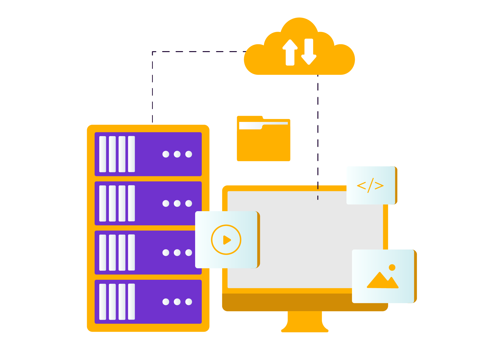

Gestión Integral de Datos
Ofrecemos soluciones completas para el manejo de datos, abarcando su almacenamiento seguro, procesamiento eficiente y análisis avanzado. Nuestro enfoque integral te permite transformar los datos en información valiosa para la toma de decisiones estratégicas.
Soluciones Avanzadas de Datos e Inteligencia Artificial
Soluciones que combinan Machine Learning, IA e integración de datos para optimizar procesos, automatizar tareas y generar insights estratégicos.

Gestión e Integración de Bases de Datos
Brindamos soluciones para la gestión, integración y almacenamiento de datos, asegurando eficiencia y confiabilidad en el manejo de información clave.